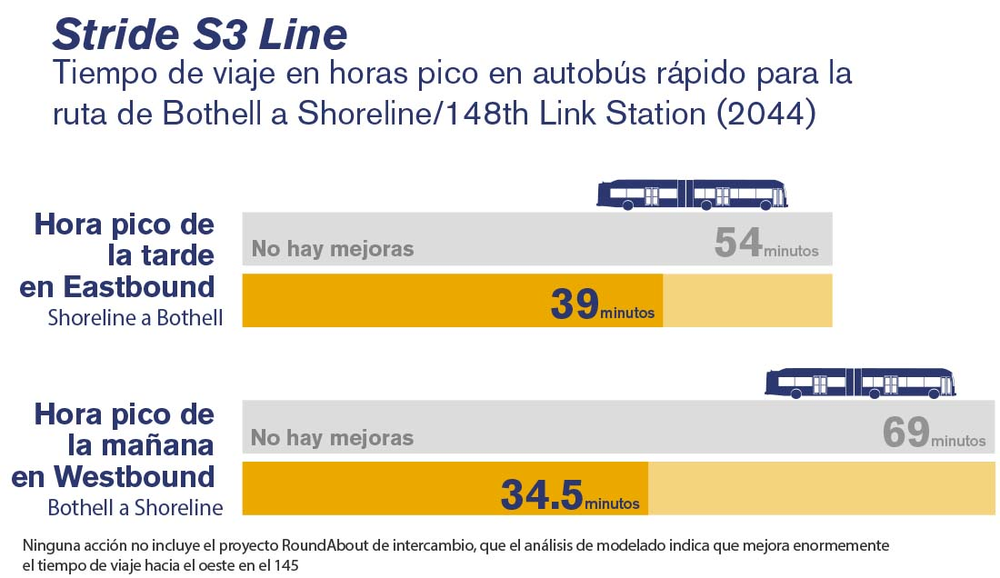

El período de interacción para Lake Forest Park,
Shoreline/Seattle, y Kenmore terminó. Estamos
organizando una sesión informativa casual
adicional para la Ciudad de Bothell el 25 de
abril de 3:30 a 6:30 p. m. en la Biblioteca
Bothell.
Bienvenido
¡Stride viene hacia usted!
Este sitio web de interacción en línea comparte el
60% de los planes de diseño y las últimas noticias
con el público. Recientemente completamos el 60% del
diseño de Bothell.
El objetivo del programa de autobuses de transporte
rápido (Bus Rapid Transit, BRT) Stride es brindarle
formas más prácticas y eficientes de llegar a su
destino, con un servicio frecuente todos los días en
toda la región.
Vea una introducción a Stride BRT en nuestro
siguiente video corto.
Estamos organizando una sesión informativa
casual de reunión pública para compartir el 60%
del plan de diseño de Bothell. Asista a la
reunión para obtener más información sobre el
diseño en su ciudad, hacer preguntas y compartir
sus opiniones sobre la futura construcción.
25 de abril
Bothell
De 3:30 a 6:30 p.m.
Biblioteca de Bothell
El transporte público rápido en autobús de Sound
Transit será un servicio de autobús rápido,
frecuente y confiable que conectará con el tren
ligero y con las comunidades al norte, este y
sur del lago Washington. Al igual que el
servicio de tren ligero, Stride está diseñado
para viajes convenientes con llegadas y salidas
rápidas, incluido el pago de pasaje fuera del
vehículo y entrada y salida por múltiples
puertas. Los nuevos carriles para autobuses y
las mejoras en la prioridad para el transporte
público ayudan a los pasajeros a evitar el
tráfico. Nuestra flota de autobuses Stride
incluirá autobuses eléctricos a batería (BEB)
para una forma más limpia y sostenible de viajar
en la región. Las rutas de Stride reemplazarán
el servicio ST Express existente actualmente
operado por socios de transporte público. La
ruta 560 será reemplazada por S1: I-405 sur, la
ruta 535 será reemplazada por S2: I-405 norte y
la ruta 522 será reemplazada por S3. Los
autobuses Stride se conectarán con Link light
rail y le brindarán nuevas formas de llegar a su
destino. Nuestro programa Stride también
incluirá un nuevo centro de mantenimiento de
autobuses en Bothell para garantizar un viaje
seguro, limpio y cómodo para los pasajeros de
Sound Transit. Las líneas de autobús S1, S2 y S3
juntas forman el programa Stride.
¿Qué son S1 y S2?
Las líneas S1 y S2 Stride, anteriormente
conocidas como autobuses de transporte público
rápido I-405 en la fase de planificación del
proyecto, conectarán comunidades a lo largo de
la I-405 y la SR 518 desde Lynnwood hasta
Burien. S1 va de Burien a Bellevue y S2 va de
Bellevue a Lynnwood. Con autobuses que circulan
cada 10 minutos, este nuevo servicio se
conectará con el Link light rail en Lynnwood,
Bellevue y Tukwila, la línea S3 Stride en
Bothell y con otros servicios de transporte
público proporcionados por Sound Transit,
Community Transit y King County Metro. El
proyecto incluye un nuevo centro de transporte
público en South Renton y 10 estaciones Stride,
tres de las cuales también incluirán
estacionamiento, para un total de 1300 espacios
nuevos. Se espera que el estacionamiento en el
Centro de Transporte Público de South Renton y
en Northeast 44th Street quede terminado en
2034. Se prevé que la estación de Totem
Lake/Kingsgate en Kirkland esté terminada en
2035. Las líneas S1 y S2 se basan en el Plan
Maestro I-405 del Departamento de Transporte del
estado de Washington con mejoras en las
vialidades para un viaje más rápido. Nos estamos
asociando con el WSDOT para diseñar y construir
varias de las estaciones Stride a lo largo de
estas líneas de servicio.
Las líneas S1 y S2 disminuyen su tiempo de viaje
¿Qué es S3?
La línea S3 Stride, antes conocida como
transporte de autobús de transporte rápido SR
522/NE 145th, atenderá a las crecientes
comunidades del norte del lago Washington desde
Shoreline y Seattle hasta Bothell. El proyecto
incluye 14 estaciones Stride. La línea S3
conectará a los pasajeros con el Link light rail
en Shoreline South/148th en el extremo oeste del
corredor, y en el extremo este del corredor con
la línea S2 en Bothell. La S2 y la S3 se
conectarán en el Centro de Transporte Público SR
522/I-405 con el servicio de transporte
proporcionado por Sound Transit, Community
Transit y King County Metro. Stride agregará
espacios de estacionamiento en Kenmore y
Bothell, cuya finalización se prevé para 2034, y
en el Lake Forest Park, cuya finalización se
prevé para 2044.
La línea S3 reducirá su tiempo de viaje en
transporte

Flotilla de Stride
Puede reconocer los autobuses Stride por sus
colores azul, amarillo y blanco. La marca Stride
los hace fáciles de detectar. Habrá una flotilla
de autobuses de dos pisos en la S1 y la S2, así
como autobuses articulados en la S3. Stride
también contará con una nueva flotilla de
autobuses eléctricos a batería. Vea una vista
previa del diseño del autobús abajo:
Participe en nuestra encuesta
Queremos oír de usted mientras nos preparamos
para la construcción en su vecindario.
Si su idioma no está disponible, comuníquese al
1-800-201-4900/TTY Servicio de Retransmisión:
711 o escriba aaccessibility@soundtransit.org
para obtener formatos alternativos.
Suscríbase para recibir noticias del proyecto
Obtenga las próximas noticias sobre el proyecto
y oportunidades de participación pública
Stride conectará las comunidades del
este, el norte y el sur del lago
Washington
Antecedentes
Stride ha recorrido un largo camino desde la fase de
planeación
Nuestros proyectos alcanzan varios hitos —30 %,
60 % y 90 % de diseño— durante la fase de
diseño que están asociados con un nivel general de
"completitud" del diseño. La fase de diseño
del 30 % se completó en 2021 y 2022, y ahora
estamos en el diseño del 60 % para el programa Stride.
En el diseño final, se finalizan los planos y se
preparan para la construcción.
Anticipamos comenzar la construcción en 2024/2025 y
comenzar el servicio en algunas líneas a partir de
2026/2027.
Incluido en la medida Sound Transit 3 aprobada
por los votantes en 2016, el programa Stride
brindará un servicio de transporte público
rápido, frecuente y confiable a las personas que
viven y trabajan a lo largo de la I-405 y la SR
522. Las nuevas conexiones de Stride de Bellevue
a Burien, de Lynnwood a Bellevue y de Shoreline
y Seattle a Bothell se basan en el compromiso de
Sound Transit con el transporte equitativo,
accesible y asequible. Con el crecimiento
demográfico proyectado en Puget Sound, Stride es
un servicio que funcionará 19 horas al día y que
satisfará las necesidades de transporte de más
personas y conectará la región de maneras nuevas
y más rápidas. No hay necesidad de ver un
horario de autobuses para Stride, ya que los
autobuses pasan cada 10 o 15 minutos. Ofrece una
alternativa fácil a conducir en vialidades
congestionadas, evitando el tráfico de la I-405
en los carriles exprés de peaje y construyendo
carriles de acceso comercial y transporte
público en la SR 522. Las líneas Stride
trabajarán con socios regionales para brindar
más servicio además de integrarse al servicio de
Sound Transit Link. Las conexiones de Stride con
el tren ligero pueden llevarlo a un partido de
los Mariners o al aeropuerto Sea-Tac y, en el
futuro, a Everett o Tacoma. La S3 se detiene a
lo largo del sendero Burke-Gilman, así que puede
disfrutar de un paseo panorámico a pie o en
bicicleta hasta las estaciones de Stride.
Ante la pandemia y el fuerte aumento de las
presiones de los costos en toda la región de
Puget Sound, la Junta de Sound Transit tomó
medidas en agosto de 2021 para garantizar que
nuestro programa de expansión del transporte
público aprobado por los votantes siga siendo
asequible.
Este trabajo crítico abordó una brecha de
asequibilidad estimada de $6.5 mil millones para
entregar proyectos de acuerdo con sus programas
anteriores, debido a los costos regionales de
bienes raíces y construcción que aumentan las
estimaciones de proyectos futuros.
Después de 17 meses de debates e interacción del
personal y la junta con las jurisdicciones y los
interesados, la junta adoptó un plan de
reestructuración el 5 de agosto de 2021. Obtenga
más información sobre las acciones de la junta
en la
publicación del blog de nuestra
Plataforma.
Con base en las proyecciones de ingresos
actuales y las estimaciones de costos, el plan
adoptado por la junta identifica:
2026/2027 como el plazo que podemos
permitirnos para comenzar el servicio en el
proyecto SR 522/NE 145th BRT
(Stride S3).
2026/2027 como el plazo que podemos
permitirnos para abrir el servicio en la
línea de autobuses de transporte rápido
Stride del sur, de Burien a Bellevue (la
línea S1) y completar la construcción de la
estación NE 85th en la línea norte.
2026/2027 como el plazo que podemos
permitirnos para abrir el servicio en la
línea norte de Bellevue a Lynnwood (la línea
S2). Esta fecha de servicio también se
coordina con el proyecto de mejora de la
I-405, Brickyard a SR 527 del WSDOT.
2034 como el plazo que podemos permitirnos
para proporcionar estacionamiento adicional
en Kenmore y Bothell.
2044 como el plazo que podemos permitirnos
para proporcionar estacionamiento en Lake
Forest Park.
2034 como el plazo que podemos permitirnos
para proporcionar estacionamiento en
NE 44th en Renton y el Centro de
Transporte Público de South Renton.
2035 como el plazo que podemos permitirnos
para proporcionar estacionamiento adicional
en Kingsgate en Kirkland.
Los costos del proyecto están siendo seguidos de
cerca a medida que trabajamos con las
jurisdicciones asociadas y los interesados para
avanzar en los proyectos de Stride. Los
cronogramas finales de los proyectos se
enfocarán más a medida que avanzamos en el
diseño del proyecto y la adquisición de
propiedades, incluido el examen de las opciones
de ahorro en los costos.
Nuestro camino a seguir estará determinado por
esfuerzos decididos para obtener una mayor
financiación. Se requerirá una estrecha
colaboración con los socios para entregar los
proyectos lo más rápido posible.
Obtenga más información sobre el proceso de
reestructuración y el aumento de las
estimaciones de los costos de construcción en
soundtransit.org/realignment.
Sound Transit completó una lista de verificación
ambiental de la Ley de Política Ambiental
Estatal (State Environmental Policy Act, SEPA)
para nuestros proyectos Stride: I-405 BRT,
SR 522 BRT y la unidad de operaciones
y mantenimiento de la base de autobuses norte.
Con base en la lista de verificación, los
informes técnicos y otra información, Sound
Transit determinó que los proyectos de Stride no
tienen un impacto adverso significativo probable
sobre el medio ambiente y emitió una
determinación de no importancia (Determination
of Nonsignificance, DNS) para cada proyecto.
Sound Transit continúa rastreando el diseño del
proyecto en busca de cambios en los impactos
ambientales documentados en el proceso de la
SEPA y la posible necesidad de una evaluación
adicional de impactos y mitigación.
Gracias por sus continuas opiniones y
comentarios. Sus pensamientos nos ayudan a
comprender mejor las comunidades a las que
servimos. Desde 2018, nos hemos reunido con
aproximadamente 80 organizaciones comunitarias,
130 propietarios y miles de miembros de la
comunidad en eventos locales. Algunos temas
comunes que hemos oído del público son preguntas
y comentarios sobre el cronograma del proyecto;
el programa de construcción futura; el diseño y
los efectos del proyecto, y el diseño y las
ubicaciones de las estaciones. Los resúmenes de
los esfuerzos previos de divulgación pública
están disponibles en los sitios web de nuestros
proyectos en la sección de documentos.
A medida que el diseño continúa avanzando, estamos
continuando las conversaciones sobre planes de sitios
individuales y respondiendo preguntas relacionadas con
el proyecto. Nos comunicamos con propietarios
individuales para comenzar el proceso de adquisición de
propiedades entre septiembre de 2021 y febrero de 2023.
El equipo del proyecto se ha
involucrado activamente con los
propietarios que pueden verse
afectados por el proyecto desde el
principio del proceso de diseño. Los
dueños de propiedades de Seattle,
Shoreline, del lado este de la
SR 522 en Lake Forest Park, del
lado oeste de la SR 522 en Lake
Forest Park, Kenmore y Bothell
fueron invitados en fases para
discutir cómo puede afectar el
proyecto su propiedad
específicamente y para responder
preguntas relacionadas con el
proyecto entre enero de 2020 y
agosto de 2021. Las reuniones de
propietarios en persona se cambiaron
a reuniones virtuales debido a las
recomendaciones de distanciamiento
social por la COVID-19. Se notificó
a los propietarios de otras
oportunidades para interactuar con
el proyecto e información del
proyecto por correo, correo
electrónico y últimas noticias del
proyecto.
En marzo de 2021, el proyecto
alcanzó el hito del diseño del
30 % y el equipo del proyecto
realizó una jornada de puertas
abiertas en línea y reuniones
comunitarias virtuales para
compartir la información de diseño
más reciente. Con base en los
comentarios de los propietarios, la
trayectoria de la ruta en Lake
Forest Park se cambió al oeste de la
SR 522 para minimizar el número
de propietarios que requerirían
reubicación.
El equipo del proyecto continúa
respondiendo las preguntas
relacionadas con el proyecto que
tienen los propietarios y los grupos
de vecinos, y reuniéndose con ellos
a pedido a medida que avanzan las
mejoras del diseño.
El equipo del proyecto se ha
involucrado activamente con los
propietarios que pueden verse
afectados por el proyecto desde el
principio del proceso de diseño. A
los propietarios se les ofrecieron
reuniones si se veían afectados por
el proyecto. Debido a la pandemia,
las reuniones de interacción con
propietarios se cambiaron a
reuniones virtuales. El proyecto
pasó por Certificación Civil con la
Junta de Sound Transit en junio de
2022.
Sound Transit ha mejorado el diseño
del programa Stride para minimizar
el número de propietarios que
requerirían reubicación, y la gran
mayoría de las propiedades afectadas
como parte del programa involucran
solo adquisiciones parciales y
servidumbres para construcción
temporales. Sin embargo, en un
pequeño número de casos, el impacto
de un proyecto es tan grande para
una propiedad en particular que un
propietario/inquilino puede ser
desplazado en el proceso. En caso de
que eso ocurra, las personas o las
empresas desplazadas tienen derecho
a la asistencia y los pagos para
reubicación previstos por la Ley de
Asistencia para Reubicación y
Políticas de Adquisición de Bienes
Inmuebles Uniformes de 1970 (Ley
Uniforme).
Sound Transit informará
completamente a cualquier persona
que califique como persona
desplazada sus derechos, incluidos
sus derechos a la asistencia y los
pagos para reubicación previstos por
la Ley Uniforme. Cualquier persona o
empresa desplazada tiene a su
disposición servicios de asesoría
sobre la asistencia para
reubicación. A una persona o empresa
desplazada se le asignará un agente
de reubicación de Sound Transit que
estará disponible para hablar de los
procedimientos de reubicación y
responder preguntas.
Vea este gráfico
para conocer los pasos del proceso
de adquisición de una propiedad. El
Manual de adquisición y
reubicación
de Sound Transit proporciona más
información sobre el proceso de
reubicación y apoyo para esta.
Beneficios comunitarios de Stride
Ahorra tiempo y energía evitando el
tráfico de automóviles a lo largo de la
I-405 y la SR 522.
Expande el acceso al transporte público
y las conexiones a comunidades diversas
y en crecimiento.
Crea nuevas conexiones con el tren
ligero, King County Metro y Community
Transit.
Usa los primeros autobuses eléctricos a
batería de Sound Transit, lo que reduce
el impacto sobre la calidad del aire.
Permite abordar fácil y rápidamente con
sus varias puertas y el pago fuera del
autobús
Usa los carriles de acceso comercial y
transporte público (Business Access and
Transit, BAT) y exprés con peaje nuevos
y existentes para evitar la congestión y
mejorar la confiabilidad del transporte
público.
Proporciona una alternativa a los
vehículos de ocupación individual.
Incluye estaciones con protecciones
climáticas y señalización clara.
Mejora el acceso peatonal a las
estaciones.
Últimas noticias del diseño
Conozca los más recientes planes de diseño de Stride
para su área
Para alcanzar el hito del diseño del 60 %, hemos
continuado las conversaciones con las jurisdicciones y
las comunidades que se encuentran a lo largo del
corredor para garantizar que el proyecto cumpla los
requisitos de los códigos jurisdiccionales y las
necesidades de los residentes y los pasajeros.
Continuaremos trabajando con jurisdicciones y
propietarios para mejorar los diseños. En cada sección,
puede encontrar las últimas noticias de diseño y planos
de planta panorámicos a medida que estén disponibles.
A lo largo del programa Stride, hay nuevos
cambios en el diseño que incluyen:
Mejoras en el acceso peatonal con nuevas
aceras e iluminación.
La primera flotilla de autobuses eléctricos
a batería de Sound Transit. Se agregarán
estaciones de carga en cada terminal de
todas las líneas de Stride.
Más de 40 estaciones BRT en total a lo largo
de las líneas S1, S2 y S3. El parabús
cubierto típico tendrá 48 pies de largo y la
mayoría tendrán máquinas expendedoras de
boletos, lectores de tarjetas ORCA y
letreros con mensajes.
A lo largo de la línea S3, el diseño cambió
para crear estaciones significativamente más
grandes y accesibles.
Parte de nuestro programa Stride está siendo
diseñado y construido por nuestras agencias y
ciudades asociadas locales. El Departamento de
Transporte del Estado de Washington, las
ciudades de Bothell, Shoreline, Kirkland y
Renton, así como la Universidad de Washington
Bothell, son algunos de los socios clave que
están construyendo elementos de Stride. Nuestros
socios contribuyen al éxito del programa de
autobuses de transporte rápido de Stride.
La base de autobuses norte agregará un nuevo
edificio de mantenimiento y operaciones de
autobuses y una estructura de estacionamiento
para autobuses y otros vehículos. El diseño del
30 % está completo y el diseño del
60 % está en marcha.
El diseño incluye:
Un sitio de 2.5 acres dentro del Canyon Park
Business Center en 20th Avenue Southeast.
Un edificio de administración y operaciones
de dos pisos, un edificio de mantenimiento
de autobuses, almacenamiento de autobuses y
una instalación de carga de autobuses
eléctricos a batería con estacionamiento
para empleados arriba.
Jardinería para ocultar estructuras
alrededor de la instalación.
Se integrarán elementos gráficos en la
instalación en lugares que sean visibles
para el público.
Representación de la instalación de la base de
autobuses norte
Las instalaciones de la base de autobuses norte
garantizarán que los autobuses de Stride reciban
limpieza y mantenimiento regulares
Mapa de la base de autobuses norte
A continuación encontrará las últimas noticias de
diseño ciudad por ciudad.
Últimas noticias del diseño de la línea S1
La línea S1 incluirá una estación en Burien en
el Centro de Transporte Público de Burien
(Southwest 148th Street y First Avenue South).
Las mejoras de diseño incluyen:
Modificación de la isla oeste dentro del
centro de transporte público para la futura
estación Stride.
Mejoras en las vialidades para agregar un
carril solo para autobuses a lo largo de
Southwest 148th Street, que conecte con la
SR 518, para las operaciones de Stride.
Representación de una estación Stride en el
Centro de Transporte Público de Burien
La estación Tukwila International Boulevard (SR
518 y Tukwila International Boulevard) dará
servicio a Tukwila y SeaTac. En asociación con
el WSDOT, la línea S1 incluirá una nueva
estación Stride en la SR 518. Los pasajeros
podrán conectarse al servicio de tren ligero
existente a través de un nuevo puente peatonal.
Esto proporcionará un trasbordo fácil para los
pasajeros de Stride BRT que buscan viajar al
aeropuerto o a Seattle.
Las mejoras de diseño incluyen:
Mejoras generales al diseño de la estación.
Avance de los servicios públicos y el
drenaje de aguas pluviales y la iluminación
eléctrica en las islas Stride.
Mejora de la arquitectura de la estación
para incluir elementos Stride.
La estación Tukwila Boulevard tendrá pares de
estaciones Stride
La línea S1 incluirá dos estaciones en Renton:
estación Northeast 44th (I-405 y NE 44th
Street) y el Centro de Transporte Público de
South Renton (Rainer Avenue South y South Grady
Way). La estación Stride de NE 44th se
entregará como parte del proyecto del WSDOT
Renton a Bellevue.
Las mejoras de diseño incluyen:
Un estacionamiento superficial en el Centro
de Transporte Público de South Renton, que
será reemplazado por un estacionamiento de
cinco niveles en el futuro.
Dos islas de autobuses compuestas por ocho
bahías de autobuses, la mayoría bajo una
cubierta de dosel, que sirven a Stride de
Sound Transit, King County Metro RapidRide y
autobuses locales en el Centro de Transporte
Público de South Renton.
Infraestructura de carga de autobuses
eléctricos a batería para los autobuses de
Stride y King County Metro en el centro de
transporte público.
Una nueva intersección señalizada de cuatro
vías construida en Rainier Avenue South y
Hardie Avenue Southwest para apoyar las
operaciones de autobuses.
Mejoras en la seguridad de los peatones,
como nuevas aceras e iluminación en el
centro de transporte público.
Trabajo de construcción realizado a lo largo
de la SR 167 para agregar carriles en
el acotamiento para autobuses cerca de las
rampas de entrada y salida de la I-405 para
apoyar las operaciones de Stride.
El estacionamiento disuasorio de Renton contará
con dos islas Stride.
Las líneas S1 y S2 incluirán una estación Stride
en el Centro de Transporte Público de Bellevue
en Northeast 6th Street y 110th Avenue
Northeast. Los pasajeros podrán conectarse con
los autobuses locales y exprés, King County
Metro RapidRide y el Link light rail en la
estación del centro de Bellevue. Las líneas
Stride norte y sur, S1 y S2, se conectarán en
esta estación.
Las mejoras de diseño incluyen:
Trabajos de construcción en el Centro de
Transporte Público de Bellevue para preparar
la instalación de los elementos de la
estación Stride, como el parabús, el poste y
la señalización. Los postes son grandes
marcadores de estación que le ayudan a
entender el sistema Stride más fácilmente.
Trabajo de construcción realizado a lo largo
de 110th Avenue Northeast y Northeast 12th
Street para agregar bahías de parada de
autobuses para Stride. Una bahía de parada
de autobús es un área donde los autobuses
pueden detenerse momentáneamente antes de
comenzar su próximo viaje, lo que brinda un
descanso a los operadores de autobuses.
También habrá carga de autobuses eléctricos
a batería en la parada.
El Centro de Transporte de Bellevue tendrá una
nueva estación Stride
La línea S1 conecta comunidades desde Bellevue hasta
Burien
Mapa de la línea S1 de Stride
Últimas noticias del diseño de la línea S2
El segmento de la línea S2 incluirá dos
estaciones en Kirkland: la estación Totem
Lake/Kingsgate (I-405 y Northeast 128th Street)
y la estación Northeast 85th (I-405 y Northeast
85th Street). Junto con el WSDOT, estamos
construyendo la estación de Northeast 85th
Street.
Las mejoras de diseño incluyen:
Un nuevo distribuidor vial de tres niveles
en Northeast 85th Street con una estación
BRT en línea en la I-405 y acceso a los
carriles de peaje exprés.
Trabajos menores de construcción y estéticos
agregarán la infraestructura necesaria para
las estaciones BRT existentes y la estación
Totem Lake/Kingsgate para incorporar
elementos de la estación Stride y el
servicio de autobús.
El segmento de la línea S2 incluirá una estación
en Lynnwood en la estación Lynnwood City Center
(200th Street Southwest y 48th Avenue West).
Esta estación Stride estará junto a la futura
estación de Link light rail en Lynnwood, que
actualmente se encuentra en construcción y
comenzará a funcionar en 2024. Este será la
terminal de la línea S2.
Las mejoras de diseño incluyen:
Trabajo de construcción realizado en el
Centro de Transporte Público de Lynnwood
existente para preparar los cimientos y las
conexiones para dos nuevas estaciones de
autobuses Stride BRT (para dejar y recoger)
y una bahía de escala Stride BRT.
Mejoras en las vialidades y trabajos de
construcción de ampliación en la rampa de
entrada de la I-5 en dirección norte en
Poplar Way, así como en la rampa de entrada
de la I-5 en dirección sur en 196th/36th
Street. Esto será para apoyar las
operaciones de Stride hacia y desde el
Centro de Transporte Público de Lynnwood.
Representación de una estación Stride en el
futuro Centro de Transporte Público de Lynnwood
La línea S2 conecta comunidades desde Bellevue hasta
Lynnwood
Mapa de la línea S2 de Stride
Últimas noticias del diseño de la línea S3
El segmento de la línea S3 a lo largo de
Northeast 145th Street incluye estaciones BRT en
la estación de tren ligero Shoreline South/148th
y en Northeast 145th Street en 15th Avenue
Northeast y 30th Avenue Northeast. También habrá
una ampliación de vialidades para carriles para
autobuses y nuevas aceras hacia el oeste entre
8th Avenue Northeast y 6th Avenue Northeast, y
en ambas direcciones entre aproximadamente 12th
Avenue Northeast y 17th Avenue Northeast. Las
mejoras en las aceras también están asociadas
con la estación ubicada en 30th Avenue
Northeast.
Las mejoras de diseño incluyen:
Mejoras de vialidades, entradas de vehículos
y aceras/franjas de plantas para reducir los
impactos en las propiedades y en los
árboles.
Representación de la plataforma en dirección
oeste de Shoreline/Seattle 15th Avenue NE
El segmento de la línea S3 de Lake Forest Park
incluye estaciones BRT en 522 en Northeast 153rd
Street, Northeast 165th Street y en Ballinger
Way Northeast. El proyecto también incluye la
ampliación de vialidades para un carril para
autobús y nuevas aceras hacia el norte en la SR
522 entre el sur de Northeast 147th Street y
41st Avenue Northeast.
Las mejoras de diseño para reducir los impactos a
los propietarios incluyen:
Reconversión del actual carril de giro a la
izquierda de dos sentidos para reducir la
huella del proyecto.
Adición de una acera y una franja de plantas
en el lado este de la SR 522 para un acceso
peatonal seguro.
Compleción de una red de carriles de acceso
comercial y transporte público (BAT) en
Bothell Way para ahorrar tiempo a los
pasajeros. Los carriles de BAT son carriles
adyacentes a la acera usados solo por
autobuses y vehículos que giran a la
derecha. Estos carriles de BAT ya están
completos y operando.
Cambio de ampliación hacia el lado oeste de
la SR 522, para reducir en gran medida
el número de viviendas que podrían requerir
adquisiciones y reubicaciones completas en
el lado este de la SR 522.
Reubicación de algunos servicios públicos
del lado oeste al lado este.
Redefinición de los anchos de aceras y
franjas de plantas para reducir los impactos
en los árboles.
Otras mejoras de diseño incluyen:
Mejoras del diseño de la infraestructura de
aguas pluviales y el diseño de servicios
públicos.
Mejora de los diseños de muros de contención
en asociación con Lake Forest Park y el
WSDOT para integrarlos mejor en la
comunidad.
Mejora del diseño de las entradas de
vehículos en el lado este de la SR 522
para crear accesos para vehículos y giros.
Representación de la estación del centro de la
ciudad de Lake Forest Park en dirección oeste
El segmento de la línea S3 en Kenmore incluye
tres estaciones BRT en SR 522 en 61st Avenue
Northeast, 68th Avenue Northeast y 73rd Avenue
Northeast. Esta sección del corredor ya tiene
carriles exclusivos para autobuses, por lo que
no se incluye la ampliación de vialidades como
parte de este proyecto.
Las mejoras de diseño incluyen:
Diseño y reubicación de servicios públicos
en las estaciones BRT.
Mejoras en el sistema de manejo de aguas
pluviales.
Representación de la estación Stride en
dirección oeste de 61st Ave NE
El segmento de la línea S3 en Bothell incluirá
cinco estaciones en 98th Avenue Northeast y
Northeast 182nd Street, Northeast 185th Street y
104th Avenue Northeast, UW Bothell/Cascadia
College-Beardslee Boulevard, Beardslee Boulevard
y Northeast 195th Street, y el Centro de
Transporte Público SR 522/I-405. El centro
de transporte público, que conecta la S2 y la
S3, está siendo diseñado por Sound Transit y el
WSDOT, e incluye una conexión segura y accesible
para peatones con el campus de la Universidad de
Washington Bothell/Cascadia College (UWB/CC) y
los senderos de Sammamish River y North Creek.
La línea S3 conecta comunidades desde Shoreline hasta
Bothell
Mapa de la línea S3 de Stride
Proyectos de agencias asociadas
¿Qué están haciendo nuestros socios para
prepararse para Stride?
Stride conectará las ciudades que rodean el lago
Washington con el sistema de Link light rail
regional de Sound Transit y con otros servicios de
transporte público proporcionados por King County
Metro y Community Transit. Para prepararse para el
servicio de Stride en la región, Sound Transit está
colaborando con ciudades y agencias de transporte
público asociadas para mejorar la infraestructura y
las conexiones de transporte público.
Quienes viajan en la I-405 entre Renton y
Bellevue experimentan uno de los peores viajes
diarios del estado. El proyecto de ampliación y
carriles de peaje exprés I-405 Renton a Bellevue
incluye transporte multimodal y mejoras en la
seguridad para ofrecer opciones de viaje más
confiables y mantener en movimiento a los
conductores, los pasajeros del transporte
público y la carga.
El proyecto Renton a Bellevue agregará nueva
capacidad para crear un sistema de carriles de
peaje exprés (Express Toll Lane, ETL) dobles
entre la SR 167 y Renton, y Northeast 6th
Street en Bellevue. En general, el proyecto
agregará un nuevo carril en cada dirección y
combinará el carril para vehículos de alta
ocupación (High Occupancy Vehicle, HOV)
existente con el nuevo carril para crear un
sistema de ETL dobles.
Los nuevos ETL se conectarán al sistema de
carriles de peaje exprés existente entre
Bellevue y Lynnwood, así como a los carriles de
peaje para alta ocupación (High Occupancy Toll,
HOT) de la SR 167 mediante el conector
directo de distribución I-405/SR 167, para
crear un sistema de ETL de 40 millas. Este
proyecto está diseñado para mejorar las
velocidades y la confiabilidad de viaje para
todos los viajeros y respaldar la nueva línea de
autobuses de transporte público rápido (BRT)
I-405 entre Lynnwood y Tukwila incluida en el
paquete Sound Transit 3 aprobado por los
votantes.
Representación del distribuidor vial de
Northeast 44th Street como parte del proyecto
Renton a Bellevue
El proyecto de mejora de la I-405, de Brickyard
a la SR 527 se encuentra principalmente en
Bothell en la I-405, y comienza justo al sur del
cruce con la SR 522 y termina en el cruce
con la SR 527. Las comunidades de esta vecindad
verán mejoras importantes en la capacidad
adicional de los carriles de peaje exprés,
acceso directo a las carreteras estatales y
mejores conexiones al servicio de transporte
público regional tanto en la estación UW Bothell
(SR 522) como en el estacionamiento
disuasorio de Canyon Park (SR 527),
integrando las inversiones del corredor con la
apertura planeada de la línea S2 de Sound
Transit. La estación Brickyard de Bothell será
una nueva instalación de estación Stride en
línea solo para transporte público para apoyar
la línea S2 de Stride que mejorará las
conexiones con el parque y estacionamiento
disuasorio existente.
El proyecto mejorará 4.5 millas del corredor con
un enfoque tanto en la expansión del proyecto
principal como en las mejoras operativas
generales. El proyecto construirá un nuevo
carril de peaje exprés en cada dirección entre
el sur de la SR 522 y la SR 527 (para
ampliar el sistema de doble carril de peaje
exprés existente), ampliará la I-405 a través
del cruce con la SR 522 y construirá rampas
de acceso directo a los carriles de peaje exprés
en la SR 522, y construirá un distribuidor
vial de acceso directo parcial en la SR 527
hacia y desde el sur que conectará con el
estacionamiento disuasorio de Canyon Park. El
proyecto incluirá mejoras adicionales en las
vialidades locales, correcciones de barreras
para peces, muros acústicos y nuevas
instalaciones de aguas pluviales.
Mapa del proyecto de mejora de Brickyard a la
SR 527
El proyecto propuesto de distribuidor vial y
estación en línea de la I-405, Northeast 85th
Street está ubicado dentro de la ciudad de
Kirkland a lo largo de la carretera interestatal
405 (I-405). En asociación con la Ciudad de
Kirkland, el proyecto reemplazará el actual
distribuidor vial en forma de trébol de dos
niveles de Northeast 85th Street por un
distribuidor vial de tres niveles y construirá
mejoras locales a lo largo de Northeast 85th
Street y su intersección con 114th Avenue
Northeast/Kirkland Way.
La ciudad de Shoreline está diseñando mejoras
para la SR 523 (N/NE 145th Street) y el
distribuidor vial de la I-5, incluida
NE 145th Street entre 5th Avenue NE y las
rampas de entrada y salida del lado oeste de la
I-5. El proyecto reemplazará las intersecciones
señalizadas a ambos lados de la I-5 por
glorietas
y actualizará las configuraciones de los
carriles en el puente que cruza la I-5.
El Proyecto de distribuidor vial de 145th Street
y la I-5 mejorará la seguridad y el acceso
multimodal a lo largo del corredor de 145th
Street y ayudará a conectar con la futura
estación de tren ligero de Sound Transit
Shoreline South/148th, cuya inauguración está
prevista para 2024. Las mejoras del distribuidor
vial aliviarán la congestión del tráfico y
mejorarán la movilidad, la confiabilidad y la
seguridad del transporte para todos los
usuarios, incluidos peatones, ciclistas,
transporte público y carga.
Sus comentarios son muy importantes para nosotros a
medida que avanzamos hacia la construcción.
Durante la construcción, Sound Transit trabaja con
el contratista para asegurarse de que los vecinos y
las empresas estén al tanto de la próxima obra.
Próximos pasos
Manténgase informado sobre Stride
En la próxima fase de diseño: el equipo del
proyecto va a:
finalizar el diseño de vialidades y aceras
finalizar el diseño de la estación y la
integración del arte público
prepararse para la construcción
obtener permisos de uso de suelo,
ambientales y de construcción
continuar el proceso de adquisición de
propiedades
continuar interactuando con el público, los
grupos comunitarios, las empresas y los
funcionarios elegidos para informar sobre
los planes de diseño y construcción
Si tiene preguntas, comuníquese con el
equipo del proyecto por correo electrónico a
brt@soundtransit.org
o por teléfono al 206-370-5533. Le
recomendamos suscribirse a nuestra lista de
correo electrónico para estar al tanto de la
últimas noticias.
Únase a nosotros en la sesión informativa
casual de Bothell para recibir más
actualizaciones y proporcionar comentarios.
Estamos organizando sesiones
informativas casuales públicas
para compartir los planes de
diseño del 60 %. Acuda a la
reunión de su ciudad para
obtener más información sobre el
diseño en su ciudad, haga
preguntas y comparta sus ideas
sobre la futura
construcción.
25 de abril
Bothell
De 3:30 a 6:30 p.m.
Biblioteca de Bothell
¿Quiere saber más sobre Stride? La
página web de documentos de Stride para la
S1, la S2 y la S3 tiene todo, incluidos
nuestro análisis de la SEPA, mapas
detallados del proyecto y guías de
participación comunitaria. La
página de documentos
es un recurso para que el público encuentre
información detallada sobre Stride.
Sound Transit se compromete a ser un buen
vecino durante la construcción. Trabajaremos
para gestionar el impacto en las comunidades
circundantes haciendo lo siguiente:
Manteniendo un sitio de construcción
seguro: cercamos las áreas de
construcción, mantenemos el sitio
ordenado, nos adherimos a los permisos
para variaciones de ruido, etc.
Manteniendo a las personas en
movimiento: brindamos rutas seguras para
peatones y ciclistas, cambiamos el
tráfico para modificar el impacto de la
construcción y mantenemos el acceso a
propiedades privadas y vecindarios
locales.
Protegiendo el medio ambiente: nos
aseguramos de que nuestro trabajo no
tenga repercusiones negativas en el
medio ambiente.
Implementando un programa de relaciones
comerciales: brindamos recursos para
ayudar a las empresas a prepararse para
la construcción, como nuestro conjunto
de herramientas para empresas.
Manteniendo una línea telefónica directa
de construcción las 24 horas del día,
los 7 días de la semana: estamos
disponibles para responder preguntas
sobre la construcción y escuchar
comentarios sobre el proyecto.
Es posible que Sound Transit solicite
permisos de desviaciones de códigos a las
ciudades y las agencias asociadas para
completar la obra fuera de las horas típicas
de construcción para avanzar en el proyecto
general.